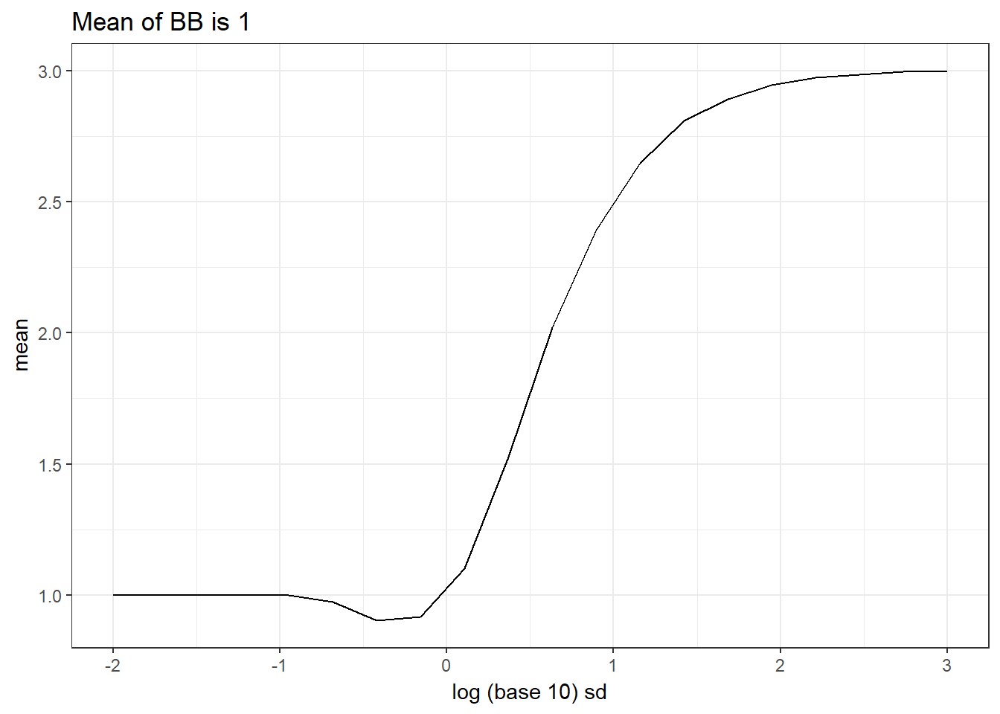

I explore properties of what I will call the normal-beta-binomial model. Specifically, this is a generative model defined by the two-step process: \[ z \sim N(0, \sigma^2),\\ y = F^{-1}(\Phi(z)|K, \mu, \tau), \] where \(F^{-1}(\cdot |K, \mu, \tau)\) is the quantile function of a beta-binomial random variable with size \(K\), underlying beta mean \(\mu\), and overdispersion parameter \(\tau\), and \(\Phi(\cdot)\) is the standard normal CDF.
First, make sure that the normal copula model does indeed result in bb
library(mupdog)
library(tidyverse)## -- Attaching packages ------- tidyverse 1.2.1 --## v ggplot2 2.2.1 v purrr 0.2.4
## v tibble 1.3.4 v dplyr 0.7.4
## v tidyr 0.7.2 v stringr 1.2.0
## v readr 1.1.1 v forcats 0.2.0## -- Conflicts ---------- tidyverse_conflicts() --
## x dplyr::filter() masks stats::filter()
## x dplyr::lag() masks stats::lag()K <- 6
mu <- 5/6
rho <- 0.01
n <- 400000
sigma <- 1
z <- rnorm(n = n, mean = 0, sd = sigma)
simout_nbb <- qbetabinom(p = pnorm(z), size = K, mu = mu, rho = rho)
emp_dist <- c(table(simout_nbb) / n)
theo_dist <- dbetabinom(0:K, K, mu, rho, FALSE)
qplot(emp_dist, theo_dist) + theme_bw() + geom_abline(lty = 2)mean(simout_nbb) ## should be about 5## [1] 5.002What if we vary the SD? We don’t still get \(K\mu\).
K <- 6
mu <- 5/6
rho <- 0.01
n <- 400000
sigmaseq <- 10 ^ seq(-2, 3, length = 20)
xbar <- rep(NA, length(sigmaseq))
for (index in 1:length(xbar)) {
z <- rnorm(n = n, mean = 0, sd = sigmaseq[index])
simout_nbb <- qbetabinom(p = pnorm(z), size = K, mu = mu, rho = rho)
xbar[index] <- mean(simout_nbb)
}
qplot(log(sigmaseq, base = 10), xbar, xlab = "log (base 10) sd", ylab = "mean", geom = "line", main = "Mean of BB is 5") + theme_bw()Interestingly, when you decrease the variance a little bit the mean goes up then goes back down to 5. When you increase the variance, the mean decreases toward \(K/2 = 3\), which makes intuitive sense.
What about a different value of \(\mu\)? Say, \(\mu = 1/6\)?
K <- 6
mu <- 1/6
rho <- 0.01
n <- 400000
sigmaseq <- 10 ^ seq(-2, 3, length = 20)
xbar <- rep(NA, length(sigmaseq))
for (index in 1:length(xbar)) {
z <- rnorm(n = n, mean = 0, sd = sigmaseq[index])
simout_nbb <- qbetabinom(p = pnorm(z), size = K, mu = mu, rho = rho)
xbar[index] <- mean(simout_nbb)
}
qplot(log(sigmaseq, base = 10), xbar, xlab = "log (base 10) sd", ylab = "mean", geom = "line", main = "Mean of BB is 1") + theme_bw()
We see a mirror image.
At \(\mu = 1/2\), the mean stays around 3 (notice the scales on the Y-axis).
K <- 6
mu <- 3/6
rho <- 0.01
n <- 400000
sigmaseq <- 10 ^ seq(-2, 3, length = 20)
xbar <- rep(NA, length(sigmaseq))
for (index in 1:length(xbar)) {
z <- rnorm(n = n, mean = 0, sd = sigmaseq[index])
simout_nbb <- qbetabinom(p = pnorm(z), size = K, mu = mu, rho = rho)
xbar[index] <- mean(simout_nbb)
}
qplot(log(sigmaseq, base = 10), xbar, xlab = "log (base 10) sd", ylab = "mean", geom = "line", main = "Mean of BB is 3") + theme_bw()sessionInfo()## R version 3.4.3 (2017-11-30)
## Platform: x86_64-w64-mingw32/x64 (64-bit)
## Running under: Windows 10 x64 (build 15063)
##
## Matrix products: default
##
## locale:
## [1] LC_COLLATE=English_United States.1252
## [2] LC_CTYPE=English_United States.1252
## [3] LC_MONETARY=English_United States.1252
## [4] LC_NUMERIC=C
## [5] LC_TIME=English_United States.1252
##
## attached base packages:
## [1] stats graphics grDevices utils datasets methods base
##
## other attached packages:
## [1] forcats_0.2.0 stringr_1.2.0 dplyr_0.7.4 purrr_0.2.4
## [5] readr_1.1.1 tidyr_0.7.2 tibble_1.3.4 ggplot2_2.2.1
## [9] tidyverse_1.2.1 mupdog_0.0.1
##
## loaded via a namespace (and not attached):
## [1] Rcpp_0.12.14 cellranger_1.1.0 compiler_3.4.3 plyr_1.8.4
## [5] bindr_0.1 iterators_1.0.9 tools_3.4.3 digest_0.6.13
## [9] lubridate_1.7.1 jsonlite_1.5 evaluate_0.10.1 nlme_3.1-131
## [13] gtable_0.2.0 lattice_0.20-35 pkgconfig_2.0.1 rlang_0.1.4
## [17] psych_1.7.8 foreach_1.4.4 cli_1.0.0 rstudioapi_0.7
## [21] yaml_2.1.16 parallel_3.4.3 haven_1.1.0 bindrcpp_0.2
## [25] xml2_1.1.1 httr_1.3.1 knitr_1.17 hms_0.4.0
## [29] rprojroot_1.3-1 grid_3.4.3 glue_1.2.0 R6_2.2.2
## [33] readxl_1.0.0 foreign_0.8-69 rmarkdown_1.8 modelr_0.1.1
## [37] reshape2_1.4.3 magrittr_1.5 backports_1.1.2 scales_0.5.0
## [41] codetools_0.2-15 htmltools_0.3.6 rvest_0.3.2 assertthat_0.2.0
## [45] mnormt_1.5-5 colorspace_1.3-2 labeling_0.3 stringi_1.1.6
## [49] lazyeval_0.2.1 munsell_0.4.3 broom_0.4.3 crayon_1.3.4This R Markdown site was created with workflowr